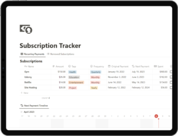

In today’s world, it’s all too easy to sign up for subscriptions—streaming services, digital tools, online memberships, fitness apps—the list goes on. Before you know it, you’re juggling multiple monthly charges, and the next thing you realize, you’ve paid for services you forgot you even had. Managing these subscriptions can be overwhelming, and missing renewal dates can lead to costly charges.
Enter the Notion Subscription Tracker Template: your go-to tool for keeping all your subscriptions in check. This powerful, customizable template helps you list, monitor, and manage all your subscriptions, so you’ll never be caught off guard by unexpected charges again. Say goodbye to the chaos of scattered subscription details, and take control of your spending.
In this blog post, we’ll dive into the top features of the Notion Subscription Tracker Template and how it can help you save money while staying organized.
Why Use a Notion Subscription Tracker Template?
Keeping track of multiple subscriptions manually or on random notes can be inefficient and risky. Forgotten renewal dates can lead to automatic charges that add up over time, while overlooking payments may result in overdraft fees. With the Notion Subscription Tracker Template, you can effortlessly track everything in one place. The template is designed with essential tools like a subscription list, payment tracker, and renewal reminders, ensuring you stay on top of your subscriptions and avoid wasteful spending.
Let’s explore each of the core features that make this template a game-changer.
1. Centralized Subscription List
The Notion Subscription Tracker Template provides a centralized list where you can log every subscription you’re paying for. Whether it’s Netflix, Spotify, Adobe Creative Cloud, or that online course platform, this template enables you to:
- Record subscription names (e.g., Netflix, Amazon Prime, Spotify).
- Log payment frequency (monthly, quarterly, annually).
- Track subscription costs to see exactly what each service is costing you.
Having everything in one place means you get a complete overview of your monthly and annual subscription costs, helping you identify where your money is going. No more scrolling through emails or bank statements trying to find subscription details—everything is now easily accessible in your Notion dashboard.
2. Payment Tracker for Financial Clarity
Staying on top of payments is crucial, especially if you’re managing multiple subscriptions with different billing cycles. The payment tracker feature in the Notion Subscription Tracker Template allows you to log each subscription’s payment dates and amounts, giving you a clear picture of your monthly and yearly spending on subscriptions.
With this feature, you can:
- Record payment histories to track how much you’ve already paid.
- Monitor payment due dates to prevent overdrafts or missed payments.
- Set budgets for subscription spending so you know when you’re approaching your limit.
Keeping a payment record gives you greater control over your finances and prevents you from accidentally spending more than you intended.
3. Renewal Reminders to Avoid Unwanted Charges
We’ve all been there: forgetting to cancel a free trial or auto-renewal and ending up with an unexpected charge. With the renewal reminders feature, the Notion Subscription Tracker Template ensures this never happens again. Simply set reminders for each subscription, and Notion will alert you before the renewal date.
You can customize reminder intervals—whether you want a notification a day, a week, or even a month before the subscription renews. This feature lets you:
- Review each subscription before it renews, giving you the chance to decide if you still need it.
- Avoid unwanted charges by receiving timely notifications.
- Make informed decisions about canceling or renewing services.
No more last-minute charges or accidental renewals—only the services you genuinely value will remain active.
4. Customizable to Fit Your Needs
Not everyone manages subscriptions the same way. That’s why the Notion Subscription Tracker Template is fully customizable. Tailor the template to suit your unique preferences by adding extra fields or sections.
Here are a few ideas:
- Add contract durations if you have fixed-term subscriptions.
- Include trial periods to keep track of upcoming free trial expirations.
- Log cancellation policies for each service so you’re aware of any fees or notice periods required to cancel.
With this flexibility, you can create a tracker that reflects your subscription habits and gives you complete control over the details you need most.
5. Save Money by Staying Organized
By using the Notion Subscription Tracker Template, you’re not only organizing your subscriptions but also saving money in the process. Visualizing all your subscriptions in one place allows you to identify redundant services, overlaps, or subscriptions you don’t use often. You’ll find it easier to:
- Spot duplicate services, such as multiple streaming subscriptions.
- Analyze which services are worth keeping versus canceling.
- Track your spending habits and see exactly how much goes into subscriptions each month.
With this streamlined approach, you can cut unnecessary expenses and only pay for the services that truly add value to your life.
How to Get Started with the Notion Subscription Tracker Template
Getting started with the Notion Subscription Tracker Template is easy! Simply download the template and start adding your subscriptions, payment details, and reminders. This one-time setup could save you hours of hassle and potentially hundreds of dollars over the year.
Take back control over your subscriptions today and avoid unnecessary expenses with the Notion Subscription Tracker Template.
Recommended For You